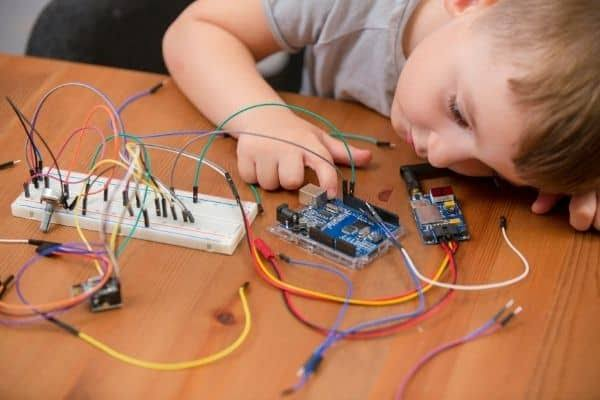

Mellon University
Home to the Robotics Institute, founded in 1979 and one of the largest research centres devoted entirely to robotics. Its work ranges from self-driving vehicles to medical and field robots.
Robotics education prepares students to design, build and program the machines of the future. This page covers three areas: how robotics is taught today, which universities lead the field, and how even young children can begin.
Robotics education has grown quickly over the last two decades. It is now taught at many levels, from school clubs to specialised university degrees and PhD programmes. Because a robot combines mechanics, electronics and software, students usually learn mechanical design, circuits, programming and artificial intelligence together.
Several universities are widely known for robotics research and teaching. Rankings change from year to year, so the list below is a selection rather than an official ranking.
Home to the Robotics Institute, founded in 1979 and one of the largest research centres devoted entirely to robotics. Its work ranges from self-driving vehicles to medical and field robots.

Robotics research at MIT is centred in CSAIL, the Computer Science and Artificial Intelligence Laboratory, where many groups work on manipulation, legged robots and machine learning.
Stanford's Artificial Intelligence Laboratory was founded in 1963 and has long combined robotics with AI research, including perception, planning and human-robot interaction.
ETH Zurich offers a dedicated Master's programme in robotics, systems and control. Its Robotic Systems Lab is known for legged robots such as ANYmal.
The JSK Robotics Laboratory at the University of Tokyo is known for developing humanoid robots, continuing Japan's long tradition in humanoid research.
Robotics can start early. For young children the goal is not to build advanced machines, but to learn through play: connecting parts, giving simple commands and watching what happens.

Example: Arduino. With a beginner Arduino kit, children can wire an LED, add a button or a distance sensor, and use block-based coding tools to make a small robot light up, beep or avoid obstacles. Simple kits and visual programming keep the focus on curiosity and problem solving.